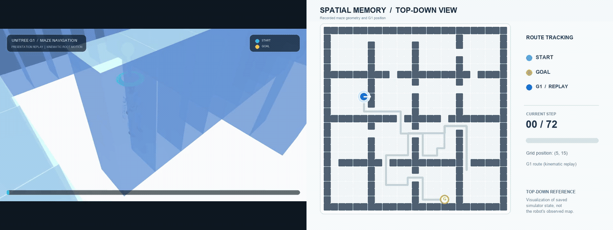

Problem
Dynamic obstacles make memory stale. Frequent sensing increases cost.
3D Perception and Navigation in Changing Indoor Environments

I developed a Unitree G1 MuJoCo testbed for navigating changing indoor environments using 3D ray sensing, spatial memory, A* planning, and emergency collision avoidance. A revised collision-clearance model and safety pipeline achieved 286/288 contact-free goals in a matched extended-horizon benchmark. I investigated persistence-aware memory and adaptive observation scheduling, then expanded the evaluation to 54 models across 72 distinct mazes and three conditions (11,664 episodes). All evaluated episodes were free of unwanted contact. RDAO v1 Footprint achieved the highest observed success on unseen mazes (61/72 in both conditions), with fewer memory observations than Periodic-5, but substantially higher computational cost. Statistical superiority was not established. The results highlight the importance of jointly evaluating sensing, navigation, and computation on unseen environments. The study uses kinematic navigation, not physically actuated walking.
Dynamic obstacles make memory stale. Frequent sensing increases cost.
Reach goals with fewer observations. Update memory only when useful.

25 × 25 grid; 0.75 m/cell. 120° field of view, 6 m range. A* plans from the remembered occupancy grid.
Three types (12 each per maze set)


54 models × 72 episodes × 3 conditions = 11,664 episodes
Frequency refers to obstacle changes. In the high-frequency condition, an object appears, moves, or disappears on every active step. All models share an 80-step horizon and 20 paid memory scans, including the initial scan. Known mazes are development environments, not independent test maps.
Observe only once, at initialization.
Observe every k steps.
Observe when at least half of the relevant observed cells are four or more steps old.
4 / 6 stale → Scan
Estimate occupancy from observation history and elapsed time, with Age-based observation scheduling.
Rank visible, uncertain cells by uncertainty and route proximity.
Test up to 3 (C + Ternary) or 5 (C-K) cells. Scan if delay regret exceeds scan cost.
Route-Decision-Aware Observation scores candidate regions using four factors.
Partial cell overlap with the view can raise V. The footprint predictor accounts for cell extent rather than only its center.
Unknown: U = 1. Known: rises with age 12–63.
Compare the cost or first action of candidate routes when a region is free versus occupied.
Give higher weight to regions closer to the next route decisions.
Scan when the best score exceeds a budget-dependent threshold. The scan updates visible cells, not just the selected region.
After each observation, retain the previously planned forward action when the gate's conditions allow it. The shared safety checks remain active.
| Model | Known | Unseen low | Unseen high |
|---|---|---|---|
| 01 Static | 51% | 61% | 61% |
| 02 Periodic-4 | 92% | 76% | 75% |
| 03 Periodic-5 | 82% | 83% | 79% |
| 04 Age-4 | 92% | 82% | 79% |
| 05 C-K | 75% | 78% | 78% |
| 06 B + Age | 64% | 69% | 69% |
| 07 C + Ternary | 64% | 71% | 71% |
| 08 RDAO v1 Footprint | 82% | 85% | 85% |
| 09 RDAO v1 Gate Every | 81% | 83% | 83% |
RDAO v1 Footprint: highest unseen success (61/72 in both).
Selected nine models; 72 episodes per model and condition.
RDAO v1 Footprint vs. Periodic-5: +5.56 pp; 6.8% fewer scans.
Paired 95% CI for success difference: −1.39 to +13.89 pp (includes zero). The frontier uses success and scan count only. Gray points represent other models.
Mean model computation / episode (ms); logarithmic bar scale, from 0.01 to 1,000 ms.
RDAO v1 Footprint: ~133× the recorded cost of Periodic-5.
Includes initialization, decisions and memory updates; excludes sensing and navigation. B and C use unseen high-frequency data. Historical timing is descriptive; controlled remeasurement is pending.
Scan every step, independently of spatial memory. 360° / 2 m.
Rule-based risk prediction. Wait, sidestep, or retreat if needed.
Reject a move or turn if its swept geometry contacts an obstacle.
Episodes with unwanted contact
Contact episodes: 1 → 0
Goal completions: 225 / 288 both
Selected-action collision shield active in both.

Kinematic motion and simulated sensing only. Real-world safety is not established.